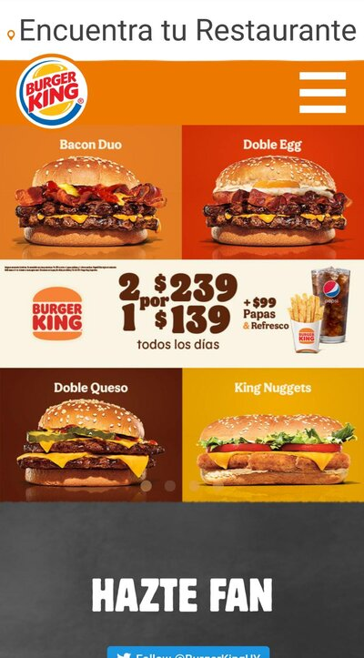
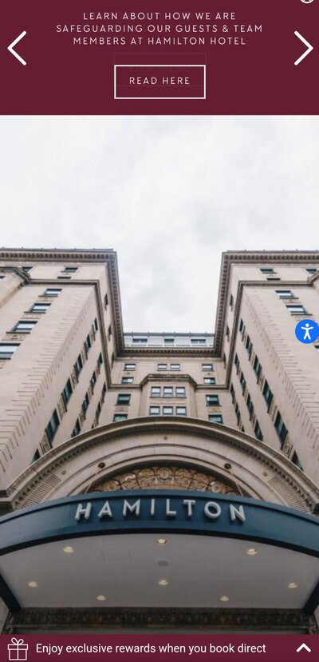

PARC: Alignment
Burger King
www.burgerking.com.uy
The page has a good alignment. It takes the atention of the user with a very organized layout. We can see that the page has a symmetric balance, with the logo and the "hamburguer button" at the same position. Also with the products images.
Visual Hierarchy
Mercado Libre
www.mercadolibre.com.uy
At this page, they put a big image in the center. We can identify that is where our atention goes first because of the size and colors. Hierarchically organized to show first a very interesting product.
Rule of Thirds
Hamilton Hotel Washington DC
www.hamiltonhoteldc.com
If we divide the image by two equally spaced horizontal lines, the sky is at the top part, the Hotel's body in the middle, and the front door at the bottom. Divided by two equally spaced vertical lines we have a very clear separetion of the towels.